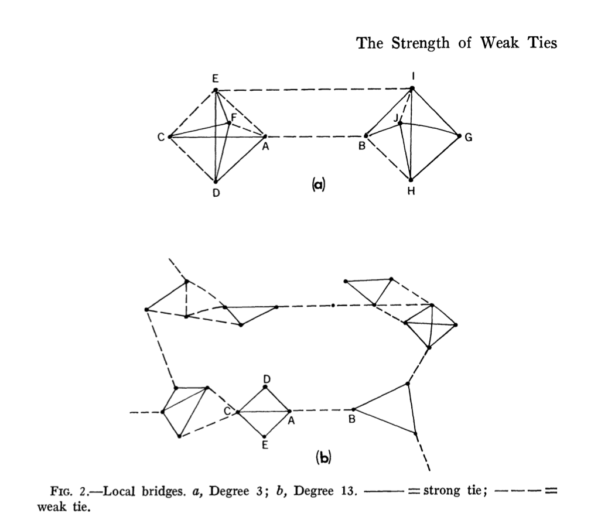

Why your acquaintances, not your closest friends, bring you the next opportunity
Question: what type of ties have better potential to help you in your career? Strong and close ties, or weak ones?
There is a Hebrew saying: כשיש קשרים לא צריך פרוטקציה. Roughly translated: when you have ties, you do not need pull. The word kesharim means connections, exactly what social scientists call social ties. Protektzia is the well-placed favor, the powerful patron who picks up the phone for you, the quiet override of the queue. The saying claims that a wide network of ordinary kesharim makes that patron unnecessary.
A sociologist named Mark Granovetter said something similar in formal terms in May 1973. His paper in the American Journal of Sociology, “The Strength of Weak Ties,” is one of the most-cited in social science. The twist: it is not your strongest ties that matter most for finding what you need. It is the weaker ones.
Why your closest people carry the least new information
Granovetter’s mechanism is simple. Your strongest ties tend to know each other and know what you know. If you have a strong tie to two people, the odds are good that those two have a strong tie to each other. You all go to the same events, share the same circle. The cluster ends up closed and densely overlapping. New information has nowhere new to enter from.
Acquaintances live in other clusters. They go to different events, work in different places, read different things. A weak tie acts as a bridge between you and a part of the world your strong ties never touch.

Figure 2 from Granovetter (1973). Solid lines are strong ties, dashed lines weak. The dashed bridges connect otherwise separate clusters.
What the job-finding numbers showed
Granovetter’s empirical study made the abstract argument concrete. He surveyed professional, technical, and managerial workers in Newton, Massachusetts who had recently changed jobs. Among those who found their job through a personal contact, only about 17% had been seeing that contact often. About 56% had seen them only occasionally, and 28% rarely. Most of the useful job leads were arriving from people on the edge of the person’s social life, not from the center.
How to put yourself near the next opportunity
The practical move is counterintuitive. If you want news, opportunities, or perspectives your inner circle does not already carry, do not lean harder on your closest people. They have already given you most of what they have. Spend time on the people you see twice a year. The colleague from a project five years ago. The acquaintance you barely know but quite like. Reply to the email you almost did not reply to. Show up at the meetup.
Loud Camel, the app I work on, does exactly that: it helps academics grow the network of weak ties their tight circle cannot give them.
The Hebrew saying gets to it in a single line. When you have ties, you do not need pull. So pick three people you used to be close to and barely speak with now. Send one of them a real message this week.